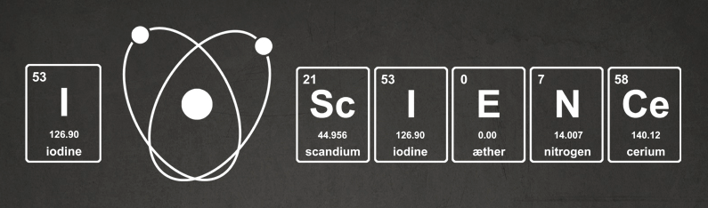
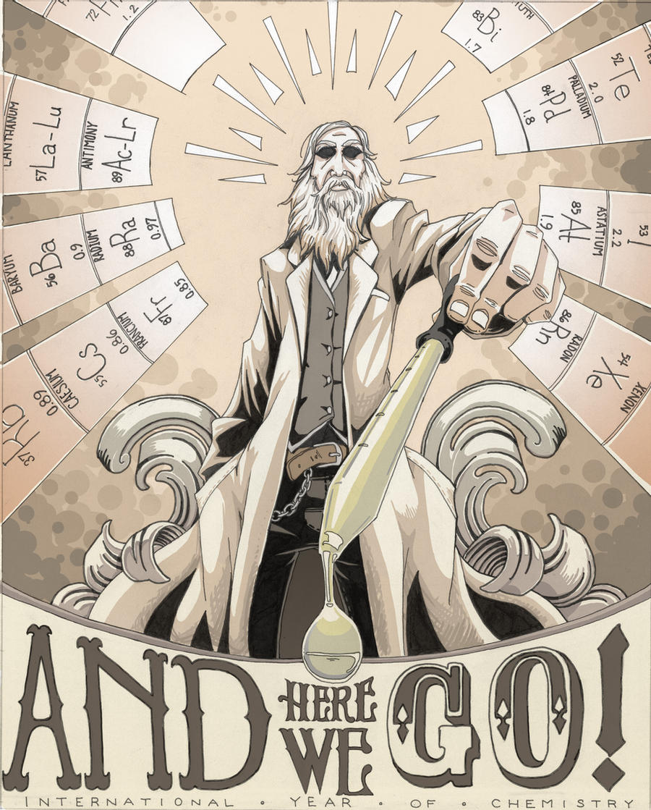

Sobre
Projeto elaborado por meio dos conceitos vistos em sala de aula e também atráves do uso de componentes específicos do BootStrap. Sem muito conteúdo, pois o meu objetivo final foi testar ao máximo as possibilidades desse FrameWork, tendo em vista o meu costume com a maneira convencional de elaborar a responsividade dos sites
